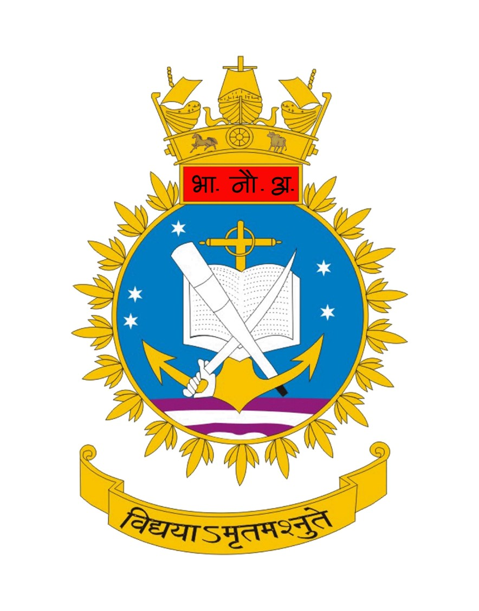

Marine Mechatronics
System Design Lab
Indian Naval Academy · National Institute of Technology Karnataka (NITK)
The Indian Naval Academy (INA), Ezhimala and the
National Institute of Technology Karnataka (NITK), Surathkal
have jointly established the
Marine Mechatronics System Design Lab,
a Virtual Lab initiative in the
Defence Technology (Navy) domain.
The lab combines INA’s naval expertise and NITK’s technological excellence to provide an immersive learning environment in marine mechatronics, system design and naval engineering through interactive simulations and virtual experiments.
Guided by Dr. Dadi Ravikanth, Indian Naval Academy, Ezhimala, and Prof. K. V. Gangadharan, National Institute of Technology Karnataka, Surathkal, the lab promotes innovation and advanced learning in marine systems and defence technologies.
The lab combines INA’s naval expertise and NITK’s technological excellence to provide an immersive learning environment in marine mechatronics, system design and naval engineering through interactive simulations and virtual experiments.
Guided by Dr. Dadi Ravikanth, Indian Naval Academy, Ezhimala, and Prof. K. V. Gangadharan, National Institute of Technology Karnataka, Surathkal, the lab promotes innovation and advanced learning in marine systems and defence technologies.